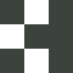
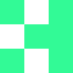
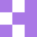
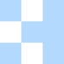
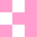

logo
O logotipo Casa Hacker — marca, simbolo H e versoes. Como aplicar, tamanhos minimos, areas de resguardo (clear space), variacoes de cor e regras pra nao desfigurar a marca.
anatomia · 3 versões oficiais
A identidade tem três expressões. A escolha depende do espaço disponível e do contexto. Quando em dúvida, use a versão horizontal.

área de resguardo · clear space
Mantenha pelo menos 1× a altura do H de espaço livre em volta do logotipo. Nenhum elemento (texto, imagem, borda) deve invadir essa zona.
Hachura verde = zona de resguardo · x = altura do H do logotipo
tamanho mínimo · redução
Reduções abaixo destes limites comprometem leitura. Para favicons e usos < 24px, use apenas o símbolo H.
| versão | digital (px) | impresso (cm) | uso |
|---|---|---|---|
| horizontal | 130 px | 5 cm | navegação, headers, papelaria A4 |
| vertical | 75 px | 4,5 cm | cards quadrados, redes sociais |
| símbolo H | 15 px | 1 cm | favicon, app icon, watermark |
variações de cor
Cinco variações cromáticas oficiais. Escolha sempre o maior contraste com o fundo. Code (verde signature) é reservado para usos institucionais de destaque.
horizontal
vertical
símbolo H · monocromáticos


símbolo H · acentos por submarca
Acentos coloridos do símbolo H que correspondem às signatures das submarcas. Use apenas no contexto da submarca correspondente — nunca como marca-mãe.



como aplicar
use
não use
favicon & app icon
Em tamanhos miniatura (favicon, app icon, avatar) usa-se sempre o símbolo H isolado. Este site usa a versão pixelada do H (grid 3×3) como favicon, que mantém legibilidade até em 16 px.
código · uso em produtos
Os SVGs hard-codam fill em cores brand. Para usar com currentColor (auto light/dark), aplique-os como mask-image e pinte com background-color. É o padrão usado no header deste site.
downloads
Os arquivos estão em assets/logos/casa-hacker/ (versões curadas com nomes semânticos) e assets/logos/casa-hacker-full/ (export completo do Illustrator · 19 artboards). Para usos impressos em alta resolução, abra o SVG e exporte na resolução desejada — vetorial não perde qualidade.
conjunto curado
assets/logos/casa-hacker/
19 SVGs com nomes semânticos (horizontal-dark, vertical-light, simbolo-code, etc.).
export completo
assets/logos/casa-hacker-full/
19 artboards originais (Illustrator). Use como fallback se faltar variante no conjunto curado.